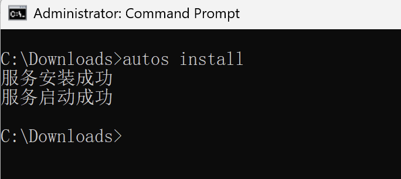
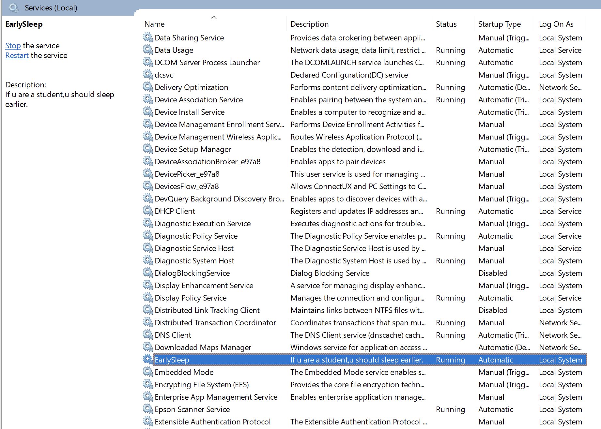

让孩子早点睡的小应用，每天22:20悄默声儿毫无征兆绝不迟疑地自动关机
没有别的功能了。
安装方法：
下载
earlySleep.zip
解压缩复制到孩子的电脑上一个目录下，比如c:\Downloads\
点开始，输入cmd，选择
管理员模式
运行
进入c:\Downloads 进行安装 
检查是否安装好？windows服务管理器中，查看EarlySleepService是否存在已经是否已经运行。 